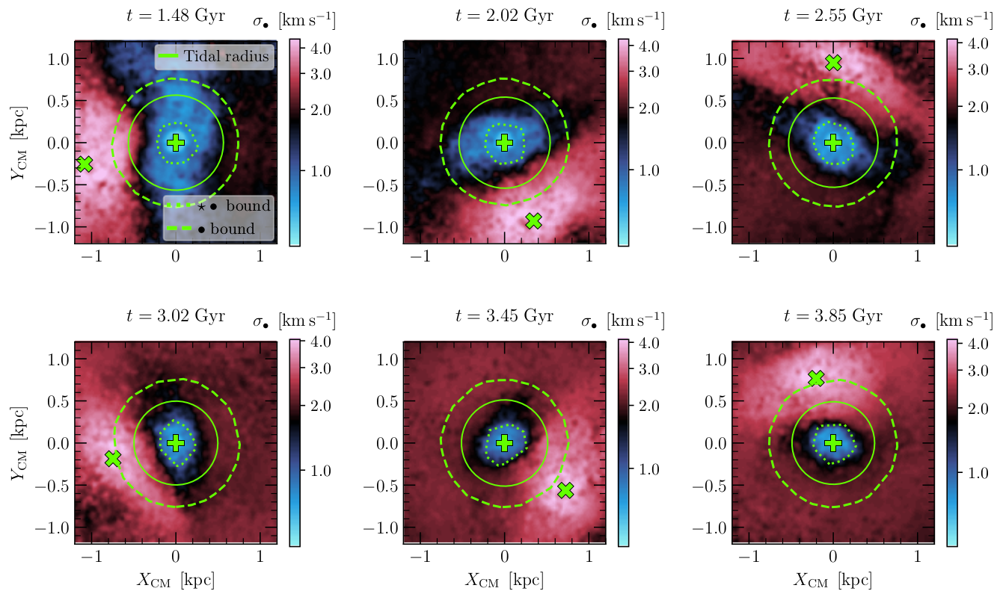

Young massive cluster NGC 3603.
Image credits: NASA, ESA, R. O'Connell (University of Virginia),
F. Paresce (National Institute for Astrophysics, Bologna, Italy), E. Young
(Universities Space Research Association/Ames Research Center), the WFC3
Science Oversight Committee, and the Hubble Heritage Team (STScI/AURA).
One of the biggest mysteries still unsolved in astrophysics is:
How did globular clusters (GCs) form? These roughly spherical collections
of stars tightly bound by gravity are of typical ages as old as (>)10 Gyrs,
which means that they were formed around the same time as the galaxies they orbit.
Only recently have we attained a high enough computational resolution, given
their small scales compared to their host galaxies, to start answering
this question. However, a reliable picture of their formation is yet not
completely clear, and different formation scenarios could coexist.
For instance, one proposed mechanism is that they could be formed
in their own dark matter (DM) minihalos, such as galaxies, but due to
lack of observational constraints and poor data in the outskirts of GCs
(where possible amounts of DM may still exist), this scenario remains
considerably unexplored. Other possible formation scenarios include GCs as
relics of young massive clusters formed in the high-redshift Universe, or being
debris of past galaxy mergers or being simply formed in-situ along with their host.
All these possibilities have arguments in favor and against them, with particular
GCs being more or less likely to cope with the predictions of each scenario.
Therefore, it is more arguable that these star clusters probably arose
from more than a single formation channel.
Globular clusters embedded in dark matter
I have explored the formation scenario where GCs are formed inside
their own DM mini-halos with the help of numerical N-body simulations performed by my collaborator,
Pierre Boldrini.
I have provided evidence that the existence of a DM mini-halo initially helps to shield the GC from
tidal effects from its host galaxy.

Dark matter shield: Velocity dispersion map of DM particles for a GC embedded in DM,
projected in the X vs. Y plane and centered in the center of mass of the GC system.
We display the last six pericenters of its orbit, where the tidal effects are stronger.
The extension of bound GC stars and bound DM particles are highlighted as dotted
and dashed green lines, respectively, while the theoretical tidal radius is
displayed as a solid green circle. The maps are color-coded logarithmically
from blue (lower dispersion) to red (higher dispersion). The centers of Fornax
and of the GC are represented as a thick green cross and a plus sign, respectively.
For this cluster, we notice that the empirical tidal radius, well traced by
the blue region, remains always larger than the bound stars radii. This argues
in favor of the dynamical presence of a dark matter shield. This figure uses data
from
Vitral & Boldrini 2022.
This is because the dark extra mass triggers a tidal radius growth that allows
the mini-halo to act as a protective shield against tidal stripping, being itself
stripped beforehand the stars. As a consequence, tidal effects such as inflation of
the stellar velocity dispersion, development of prominent tidal tails, ellipticity increase
and diffusion of the stellar distribution profile are generally much milder in clusters
that are embedded in DM.
Dark matter impact on tidal tails: Stellar distribution (and respective zoom in)
of a GC for the case where it was originally embedded in a DM mini-halo (right)
and where it was devoid of it (left).
This video highlights more prominent tails in the DM-free case, while clusters formed
inside DM mini-halos present a more compact stellar envelope. Hence, the dark matter
shield (see image above) has the effect of delaying the formation of tidal tails.
This video uses data
from
Vitral & Boldrini 2022.
Integrals of motion: Evolution of simulated clusters in the
integrals of motion (IOM) space, in particular, the E × LZ diagram.
Their positions in this diagram are scattered in a sequential color-map,
starting from the same point in white at t = 0, and ending in darker tones
(green for GCs originally formed in DM mini-halos,
and red for clusters devoid of DM). The last snapshot is marked
by a cross, for each cluster. This plot highlights a bimodal evolutionary
distribution of clusters originally embedded in dark matter (moving towards
lower energies) and those who were not (moving only slightly towards
higher energies), and more importantly, it shows that
clusters originally embedded in DM move significantly in IOM
space, such that their association with past merger events through this
diagram is not reliable.
This figure uses data
from
Vitral & Boldrini 2022.
I have helped to show that GCs formed in DM mini-halos move significantly
in integrals of motion (IOM) space due to their more intense energy loss from dynamical friction.
Hence the association of such clusters with past merger events by using the IOM method is
not reliable.
Furthermore, this energy loss shifts the GC population formed in DM mini-halos to
lower regions of the E × LZ diagram, creating a clear bimodal evolutionary
distribution that can help to evaluate if the existence of a DM mini-halo is likely .
In
Vitral & Boldrini 2022,
we have also provided a general parametric form that describes the mass profiles of
DM mini-halos (stripped or not) that embed GCs, which can be used in Jeans mass-modeling
searches for DM in GCs.
This form follows a
Zhao (1996)
αβγ model, with fixed α = 2 and β = 5,
such as in the the classic
Plummer (1911)
model:
$$M_{\bullet}(r) = \displaystyle{\frac{4 \pi \, a^{3 - \gamma} \, \rho_0}{3 - \gamma}} \, \displaystyle{\left[ 1 + \left( \frac{a}{r} \right)^{2} \right]^{(\gamma - 3)/2}} \ ,$$
where ρ0 is a scaling factor, a the scale radius,
γ ∈ (0,3) an inner slope, and r the distance to the
cluster's center.